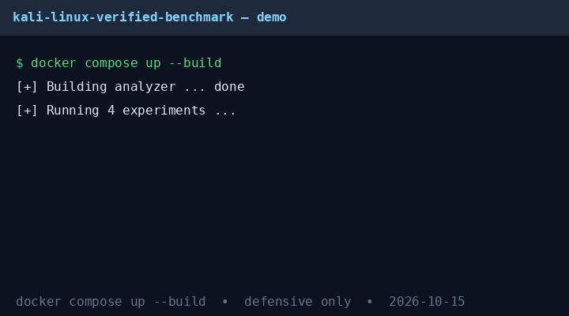

CEO summary: we took a popular beginner book, re-ran every safe claim in Docker, checked every workflow claim against live public sources and peer-reviewed benchmarks, and packaged the proof. Linux basics: 27/27 pass. 10 of 22 workflow claims need updating, retiring, or lab-only gating. The modern answer is a hybrid method backed by real numbers — and you can reproduce it with one command.
🎓 Take the 5-minute quiz ▶ Run it: docker compose up

30-second demo above = the real terminal output. Full website works offline as a single file.
rwx permissions (0–7) + small commands you chain. Example: ls lists, grep -i finds, chmod 755 means rwxr-xr-x.ifconfig → ip, old Wi-Fi attacks → modern encryption + defense, default passwords → non-root, 5-step stories → 7-phase professional flow.docker compose up --build
cat results/exp01.json # 27 passed, 0 failed
cat results/exp04.json # 12 / 6 / 2 / 2 auditFiles, copy, search, permissions octal table, environment, help — all re-executed in a temp directory and cleaned up. Nothing on your system is modified.
| Approach | Findings | Avg time | Per min | Cost/finding* | Best for |
|---|---|---|---|---|---|
| Fast app checks | 59 | 85.0 min | 0.69 | $3.60 | Rapid / CI gating |
| Deep lifecycle | 63 (highest severity) | 127.5 min | 0.49 | $5.06 | Audits / red team |
| Governance-led | 49 | 100.0 min | 0.49 | $5.10 | Compliance / risk |
*At a $150/h practitioner rate. Uncertainty intervals + Wilson CIs in results/exp02.json. Lesson: no single winner — mature teams layer all three.
Project docs, testing-guide docs, and the public vulnerability stream were reachable on 2026-10-15 (4/4). No scanning or probing — plain document/API reads only.
| Verdict | Count | Examples |
|---|---|---|
| KEEP | 12 | File layout, core commands, grep flags, rwx/octal, env vars, help workflow |
| PATCH | 6 | Distro picker, VM-only install → containers, shell/editor defaults, tool counts, lifecycle story |
| RETIRE | 2 | 2013 screenshots + default password; ifconfig-era network stack → ip |
| LAB-ONLY | 2 | Wireless/MAC walkthroughs — owned lab + written authorization only; modern defense: current encryption + auth + monitoring |
Answer 10 questions. Explanations appear after each pick. 8/10 = pro. Your score stays in this page (no account, no tracking).
Result: 0/10 answered, 0 correct
summary.json.git clone https://github.com/M0-AR/kali-linux-verified-benchmark-2026.git
cd kali-linux-verified-benchmark-2026
docker compose up --build
cat results/summary.jsonPublish as a website (GitHub Pages, 2026): push → repo Settings → Pages → Deploy from a branch → main + /docs → Save → open https://M0-AR.github.io/kali-linux-verified-benchmark-2026/. This page is already Pages-ready: single file, inline styles/scripts, plus .nojekyll.
Defensive and educational only. Test only systems you own or are explicitly authorized to test, with written scope. Isolated lab network, loopback-only ports. Wireless/identity techniques from old texts are documented here as lab-only gated items — never executed by any script in this repo. When in doubt, follow the authorized testing guides linked in the README references.
Full evidence, hidden patterns, syllabus, limitations, and references live in README.md (355 lines, every number traceable to results/*.json). Data: data/book_claims.csv, data/framework_comparison_2025.csv.